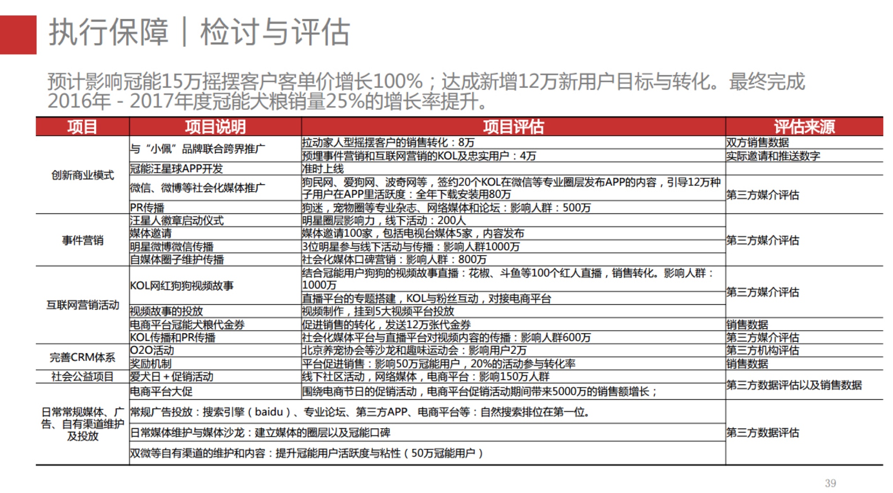

工作周报 10 05
周报要点：
核心生态主要的工作集中在 『核心生态女』同男用户的交互策略上，目前耿伟方面提供的并行工作的核心生态女已经有30左右，核心生态女的转化效率仍是重点解决的工作，将围绕以下几个点展开：
- 生态女何时介入男用户流程，深度和广度的调节；
- 如何引导核心生态女装修店铺以引发更多的曝光；
- 核心生态女的交互技巧如何更高的促进转化；
- 配套的激励围绕市场导向进行优质核心生态女的筛选；
- 如何提供生态女工具，使其更加有效率的转化。
- 核心生态女的工作状态和arpu呈完全正相关，建设生态女工作效率的评估体系。
这块属于攻关环节，资源安排上较为充足。在整个项目中，前期对于核心生态女的方案过于乐观，执行一个月以后，踩坑时间过短，使得这一块的进度严重落后于预估，正在全力解决这环。
内容线已经提升至较为重要的层面，主要集中以下几个工作：
- 内容的质量标准；
- 引导核心生态女和自然女上传高质量的内容。
同hrbp的进一步磨合，刘林有咨询公司的背景，对公司战略到部门战略的逻辑脉络接受很快，再给一周的时间，应该可以较为正式的进入工作状态。
有缘品牌版方案与执行计划已经确定，iOS和AD的版本分别在11月15日和11月30搞定；
占潮休假结束开始上班，微信方案已经过了两次，下周将安排公司核心人员的方案过会，之后开始动工。

附录（拍拖两个渠道的arpu）
广点通渠道

应用宝渠道

新产品部架构图

magnet:?xt=urn:btih:
magnet:?xt=urn:btih:
magnet:?xt=urn:btih:
magnet:?xt=urn:btih:
magnet:?xt=urn:btih:
magnet:?xt=urn:btih:
magnet:?xt=urn:btih:
magnet:?xt=urn:btih:
magnet:?xt=urn:btih:
magnet:?xt=urn:btih:
magnet:?xt=urn:btih:
几个待验证的问题
1. 短视频能大幅拉升用户的交友预期？
？？
2. 生态的引入能大大提升用户的真实性？
这个是毋庸置疑的
11.0 检讨与评估

营销大目标的评估
1. 发展品牌认知度： 潜在及可转换用户的品牌知晓率从（）提升2倍；
品牌知晓度的评估，成熟品牌公司一般采取两种方式：
- 公允的第三方品牌数据来证明，如百度品类中品牌指数、调研公司分析报告
- 调研公司做潜在用户群大抽样调查来统计非提示或提示第一提及率
花煦处于品牌初创期，建议从以下方面做品牌认知度的整体评估：
- 百度品牌指数横向对比（自己和自己比）的增长率
- 垂直媒体（如大姨妈app）问卷调研的方式，营销前后提及率对比情况
2. 促进购买行动：实现销售目标从20万根提升至83万根，计划2017年时效销售量达到7000万-8000万
购买行动的评估拟采用营销漏斗进行各级转化的评估，并同时考虑到成本问题。
我建议关键节点的模型设计成：
渠道投放 --- 决策购买 ------ 重复购买
（触客量，平均触客成本） （购买转化率） （单生命周期平均购买金额）
通过模型中4个关键指标的考量基本可以评估在固定成本下如何达成销售额。
根据投放媒体和投放方式的不同，关键环节又可分成若干个小环节，下面再做具体分析。
3. 增加重复购买率：重复购买率由 10%？？ 提升至 20%。
重复购买率定义： 初次购买的人群中有多少人在6个月内有过重复购买的用户比例
这个考核起来比较简单，个人感觉他属于第二个目标的子目标。
沟通渠道评估
视频广告
视频广告的主要的目的以发展品牌认知度为主，促销量为辅。
评估方式：
品牌认知度评估：有效到达率，潜在客户3+比率
促销量的评估：
视频播放量，完成率，跳出率，点击率 ----》 对接到触客量，触客成本
互联网营销
互联网营销以发展品牌认知度，促销量并重。
1. 自媒体
品牌认知度评估： 以阅读量，转发量，官微关注数，评论数 为衡量指标
促销量的评估： 阅读数 - 》链接打开率 --》对接到触客量，触客成本
2. 电商门店
以促销量为主：
展示数 - 》 点击浏览数 - 》购买成交率，购买金额 ，辅于 评论数，好评率等
公共关系
公关主要以发展品牌认知度为主
执行评估：以阅读数，点击数，评论数，转发数 为主要指标
促销活动
执行评估：
参与人数 、 购买人数、购买金额
直复营销
以增加重复购买率为主
会员体系评估： 不同会员人数、互动次数、购买人数、购买次数、购买金额
看指引里面，貌似对具体的活动（如新闻发布会，线下活动）等都有明确的检讨与评估描述，这个等咱们的沟通渠道确定，补上具体沟通渠道的评价机制。